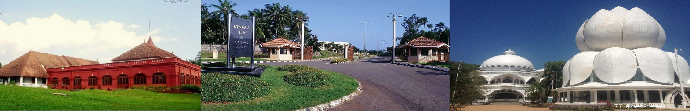
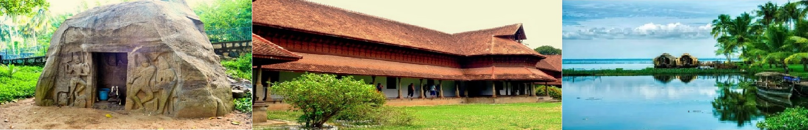

Kottayam, is a city in the Indian state of Kerala. Flanked by the Western Ghats on the east and the Vembanad Lake and paddy fields of Kuttanad on the west, Kottayam is a place that is known for extraordinary qualities.

If Ilaveezha Poochira had a bumper sticker dedicated to it, it would read, To see and not to be seen It's almost as if the valley has an alter ego; though we can sight as many as six surrounding districts from the hills while we are at Illaveezha Poonchira, we're safely cocooned in the beauty of the hillocks of the Western ghats namely, Mankunnu, Kodayathoormala and Thonippara hills
Though, no longer an offbeat location as more and more tourists have started flocking to this place it is still a go to for the hill lovers. If you are in Kottayam and planning a one-day trip, Illikal Kallu could be the place for you.
Vaikom holds a special place in Kerala's history. And it is just normal to come across monuments across this village commemorating the famous 'Vaikom Satyagraha'. The new park is the best place to relax - or catch up with family and friends. Right next to the park is the huge bell called 'Chronicle of the Shores Foretold.